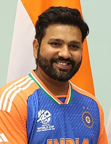
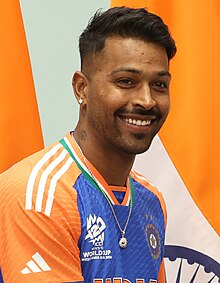
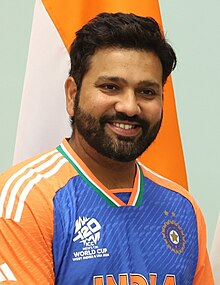
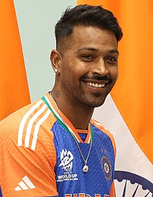

| S.NO | Name | Link | Image |
|---|---|---|---|
| 1 | Virat Kohli | Virat |  |
| 2 | Nitish Kumar Reddy | Nitish | .jpeg) |
| 3 | Rohit Sharma | Rohit |  |
| 4 | Hardik Pandya | Hardik |  |
| S.NO | Name | Link | Image |
|---|---|---|---|
| 1 | Virat Kohli | Virat | |
| 2 | Nitish Kumar Reddy | Nitish | |
| 3 | Rohit Sharma | Rohit |  |
| 4 | Hardik Pandya | Hardik |  |
Virat Kohli (born 5 November 1988)[b] is an Indian international cricketer who plays Test and ODI cricket for the national team and is a former captain in all formats.[5] He is a right-handed batsman and an occasional right arm medium pace bowler. He is considered as the greatest chaser in cricket history and is the only batsman to cross 10,000 runs in chases in white ball cricket history.[6] Kohli is the highest run-scorer in the Indian Premier League, third in T20I,ODI, and in international cricket.[7] Regarded as one of the greatest batsmen of all time, he holds the record for the most ODI centuries(51) and has the second most centuries in international cricket.(82)[8]
Kaki Nitish Kumar Reddy (Telugu: [nitiːʃ kumaːɾ ɾeɖːiː]; born 26 May 2003) is an Indian International cricketer who is an all-rounder. He bats right-handed and bowls right-arm medium fast. He plays for Andhra in domestic cricket & plays for Sunrisers Hyderabad in the Indian Premier League.[1] Nitish made his T20I debut on 6 October 2024 and his Test cricket debut for India on 22 November 2024 during the 2024–25 Border–Gavaskar Trophy.[2]
Rohit Gurunath Sharma (born 30 April 1987) is an Indian international cricketer and the captain of Indian cricket team in Test and ODI formats. He is widely regarded as one of the greatest ODI opening batters of all time.[3] He is a right-handed batsman who plays for Mumbai Indians in Indian Premier League and for Mumbai in domestic cricket. Rohit previously captained India in all three formats. After leading India to the victory at the 2024 Men's T20 World Cup, he announced his retirement from T20Is.[4][5] He also led India to victory in the 2025 ICC Champions Trophy.
Hardik Pandya (born 11 October 1993) is an Indian international cricketer who plays for the Indian cricket team. He is an all-rounder who is a right-handed middle order batsman and fast-medium bowler. He is considered one of the best all-rounders in the world in white-ball cricket. Pandya has represented India in all three formats. He captains Mumbai Indians in the Indian Premier League and occasionally plays for Baroda in domestic cricket. He has captained the Indian team in white-ball cricket and was the vice captain of the team that won the 2024 T20 World Cup